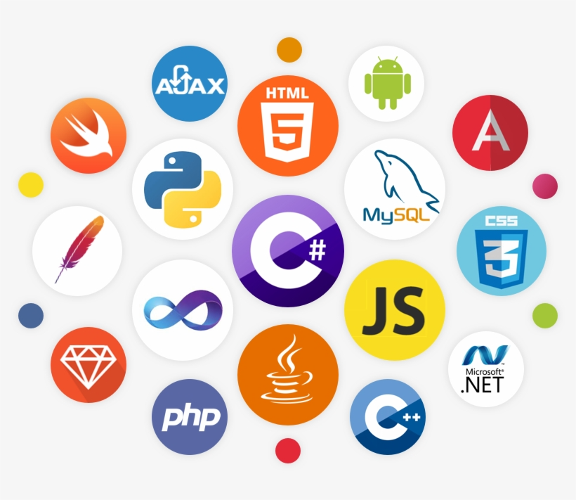

My journey in computer science began with a strong curiosity to understand the digital world. Throughout my academic pursuits, I've developed a solid foundation in programming languages like Python, Java, HTML, CSS, and JavaScript. I'm enthusiastic about solving challenging problems and exploring the endless possibilities that technology offers. With a dedication to continuous learning, I look forward to applying my skills and knowledge to contribute to innovative projects in the ever-evolving field of computer science.